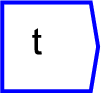
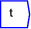

Next: Binary Operations
Up: Operations
Previous: Sheet
Contents

Returns the current value of system time.
The operator can be placed on the canvas in two ways:
- From the time widget on the toolbar

;
or
- By typing the letters "time" on the canvas and then pressing the
Enter key.